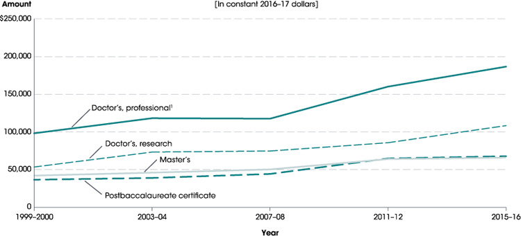
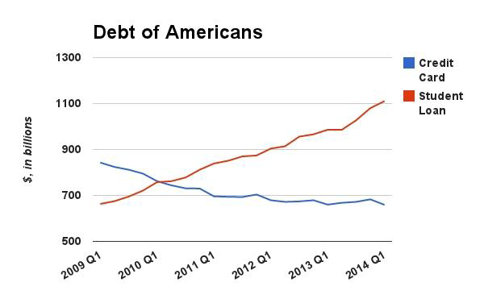

Jacek Jońca-Jasiński
/ˈja.t͡sɛk/ = Yatzee + k
Five Parts
-
Introduction
-
Professional Competencies
-
Personal Competencies
-
Financial Competencies
-
Graduate Center
Power of Good Questions
How will the future thinking look like?
What skills will the future demand?
How can we teach this future-oriented thinking?
How can we help develop skills that future will demand?
Attributes Employers Seek on a Candidate’s Resume, Top 5
|
Problem-solving skills |
82.9% |
|
Ability to work in a team |
82.9% |
|
Communication skills (written) |
80.3% |
|
Leadership |
72.6% |
|
Strong work ethic |
68.4% |
Attributes Employers Seek on a Candidate’s Resume, 6-10
|
Analytical/quantitative skills |
67.5% |
|
Communication skills (verbal) |
67.5% |
|
Initiative |
67.5% |
|
Detail-oriented |
64.1% |
|
Flexibility/adaptability |
60.7% |
Attributes Employers Seek on a Candidate’s Resume, 11-15
|
Technical skills |
59.8% |
|
Interpersonal skills (relates well to others) |
54.7% |
|
Computer skills |
48.7% |
|
Organizational ability |
48.7% |
|
Strategic planning skills |
39.3% |
Attributes Employers Seek on a Candidate’s Resume, 16-20
|
Creativity |
29.1% |
|
Friendly/outgoing personality |
27.4% |
|
Tactfulness |
22.2% |
|
Entrepreneurial skills/risk-taker |
19.7% |
|
Fluency in a foreign language |
4.3% |
competency:
“a combination of skills, abilities, and
knowledge needed to perform
a specific task.”
Mental Health Crisis Among Graduate Students
In Berkeley Well-Being survey (n = 790) rates of depression among graduate students were staggering:
-
47% of Ph.D. students and 37% master's students scored as being depressed.
-
That is one out of every two doctoral students and one out of every three master's students.
|
LIFE SATISFACTION |
Coef. | SE | t | P>t | Beta |
|---|---|---|---|---|---|
|
Living conditions
|
0.18 | 0.03 | 6.33 | 0.00 | 0.20 |
|
Career prospects
|
0.15 | 0.03 | 5.19 | 0.00 | 0.19 |
|
Financial confidence
|
0.10 | 0.03 | 3.99 | 0.00 | 0.14 |
|
Academics
|
0.14 | 0.04 | 3.82 | 0.00 | 0.14 |
| Overall health | 0.22 | 0.05 | 4.08 | 0.00 | 0.14 |
|
Academic Engagement
|
0.08 | 0.03 | 3.18 | 0.00 | 0.10 |
|
Valued & included
|
0.09 | 0.03 | 2.91 | 0.00 | 0.10 |
| Advisor/mentor | 0.07 | 0.02 | 2.76 | 0.01 | 0.09 |
| Social support | 0.11 | 0.04 | 2.55 | 0.01 | 0.08 |
|
DEPRESSION |
Coef. | SE | t | P>|t| | Beta |
|---|---|---|---|---|---|
| Sleep | -0.58 | 0.09 | -6.12 | 0.00 | -0.18 |
| Overall health | -1.17 | 0.22 | -5.44 | 0.00 | -0.18 |
| Academic engagement | -0.54 | 0.10 | -5.46 | 0.00 | -0.16 |
| Social support | -0.98 | 0.18 | -5.58 | 0.00 | -0.16 |
| Career prospects | -0.48 | 0.11 | -4.25 | 0.00 | -0.15 |
| Financial confidence | -0.27 | 0.10 | -2.78 | 0.01 | -0.10 |
| Academics | -0.32 | 0.14 | -2.27 | 0.02 | -0.08 |
| Living conditions | -0.26 | 0.11 | -2.35 | 0.02 | -0.07 |

Personal competencies for a long and productive career
Career is a MARATHON, not a sprint
-
Stress management
-
Balanced nutrition
-
Physical exercise
Better health = longer productive lifespan
Longer productive lifespan = higher cumulative earning potential
Personal Financial Education
-
Debt management and personal financial education
-
Long-term financial planning, retirement planning
Average cumulative student loan balance
Debt amounts in US Dollars
Average cumulative student loan balance

Credit Card Debt vs. Student Loan Debt

The Big Picture
FY2016 Data
-
Total student loan debt: $1.31 trillion
-
Total U.S. borrowers with student loan debt: $44.2 million
-
Student loan delinquency/default: 11.2%
Mean retirement account savings of families by age
What do we do at the Graduate Center to address needs & fears of our students?
( select examples )
Career anxiety & Career Preparation
“The largest source of anxiety for me is my job outlook. It is tremendously uncertain and thus fear-inducing.”
-
At least one in-house hosted professional or career development event each week
-
Cross-listing of relevant professional development events hosted by our partners
-
Free LinkedIn Headshot Service
Social support
“I live on my own for the first time and it is very lonely. I wish there were more exciting ways to meet other grad students.”
-
Social events hosted at least twice a month
-
Graduate Assembly
-
Food pantry
-
Never Give Up referral service
-
Graduate groups (e.g. Peer support group, Grad & Postdoc walking group)
Wellness & Health Promotion
-
Wellness Day hosted twice a semester
-
Time management & stress management workshops
-
Food pantry & nutritional education
-
Registered Dietitian lead workshops
-
Mental health awareness campaign & task force
-
Student Health Services presentations
Academic & research skills help
-
Statistical Consulting Service
-
Research Assistance Service
-
Low-cost Research Poster Printing Service
-
Free Research Strategies Training Program & "Certificate"
-
Workshops
Financial Skills
-
Tax preparation help sessions
-
Workshops hosted by Personal Financial Planning program
-
Self-funded (fund-raised) Grants in Aid program
-
Referrals to Raider Red Assistance Program and Red2Black Personal Financial Couching